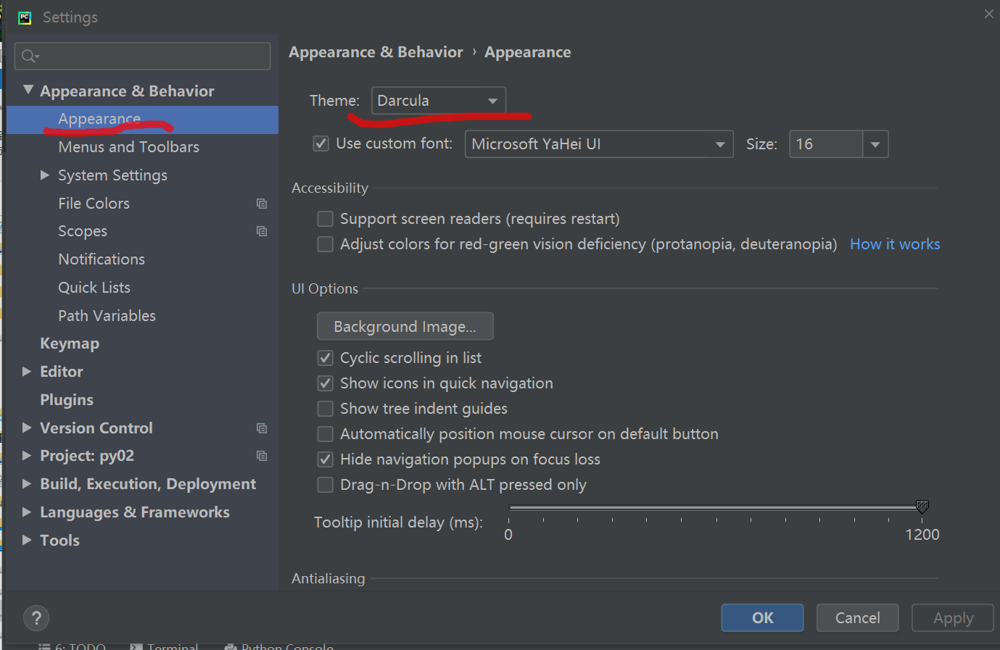
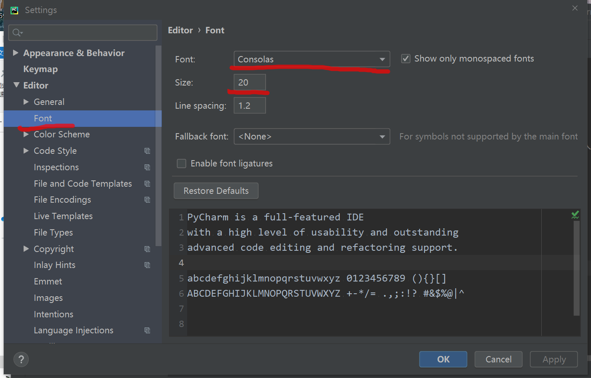
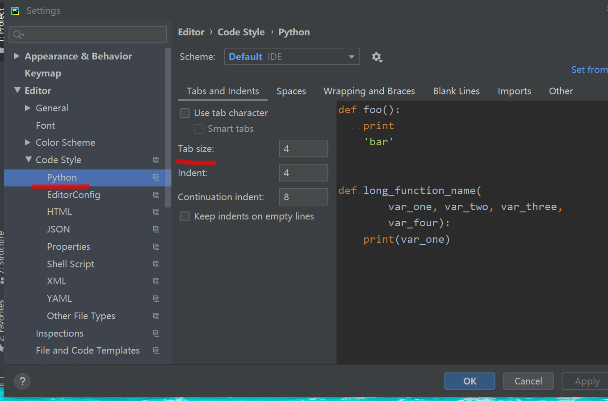
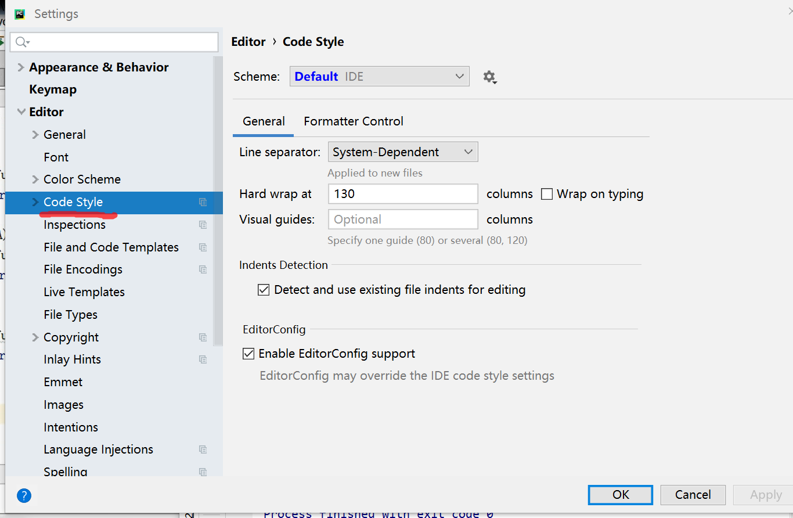
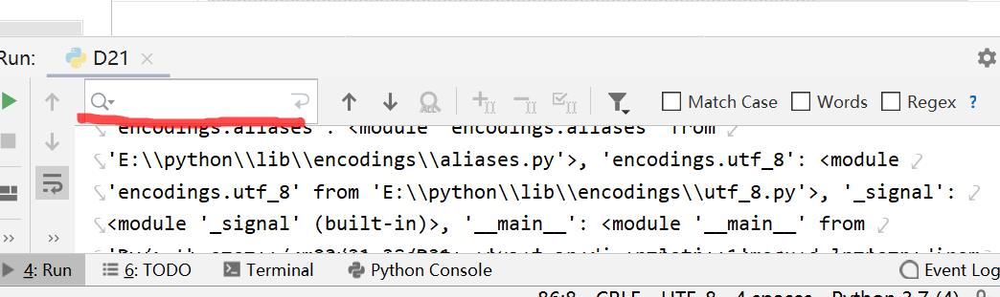

第一次打开PyCharm可能需要修改一些个性化和了解一些基本操作,有助于接下来的学习过程.(后续可能会更新)
我的版本是64位的1.3
默认黑色的,不喜欢黑色皮肤可以换成白色的

默认字体很小,看着不舒服,需要自行修改
如果想换字体可以在Font里更改

要撤销
要重做
批量注释:先选中要注释的代码块再进行操作
批量缩进
反向缩进
由于pycharm对tab和空格识别很严格,此次有坑容易报错.所以可以自行把tab修改成4个空格.
file-->setting-->Editor-->Code Style-->python

编写代码后，可以使用Ctrl+Alt+L快捷键进行排版。
具体更改可以看Settings->Editor->Code Style

普通搜索类Ctrl+N
Run运行栏里的搜索Ctrl+F
